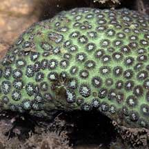
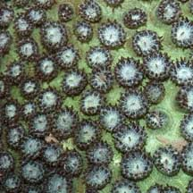
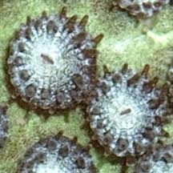
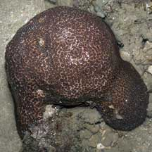
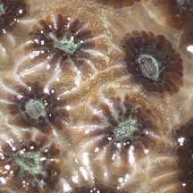
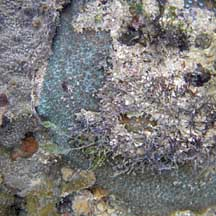
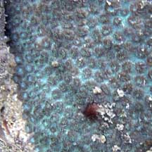
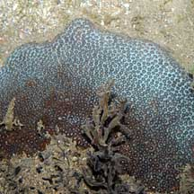
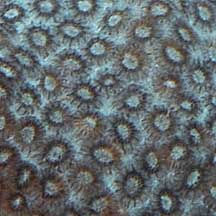

|
|
| hard corals text index | photo index |
| Phylum Cnidaria > Class Anthozoa > Subclass Zoantharia/Hexacorallia > Order Scleractinia |
| Pock-marked coral Plesiastrea versipora* Scleractinia incertae sedis (Family) updated Nov 2019 Where seen? These hard corals pock-marked with circular corallites are more often seen on our Northern shores. Usually not common. Elsewhere, they grow in shaded areas such as overhangs. It was previously placed in Family Plesiastreidae but now placed in "Scleractinia incertae sedis (Family)" which means a taxonomic group where its broader relationships are unknown or undefined. Features: Colonies seen 15-20cm, sometimes larger. The colony is generally a smooth boulder shape. The corallites have separate walls that are rather thick, forming a circular ring (0.2cm) and are not packed closely, often with a smooth area between them. The result is a rather smooth boulder pock-marked with rings. The polyps are small with many short tentacles in two alternating sizes, usually close to the colony surface, i.e., body column is not long. Colours seen include blue, green and brown. |
 Tuas, Nov 03 |
 |
 |
*Species are difficult to positively identify without close examination.
On this website, they are grouped by external features for convenience of display.
| Pock-marked corals on Singapore shores |
On wildsingapore
flickr
|
| Other sightings on Singapore shores |
 Chek Jawa, Jul 05  |
 Terumbu Bukom, Nov 10  |
 Labrador, Jun 08  |
| Family Plesiastreidae recorded for Singapore Danwei Huang, Karenne P. P. Tun, L. M Chou and Peter A. Todd. 30 Dec 2009. An inventory of zooxanthellate sclerectinian corals in Singapore including 33 new records
|
|
Links
References
|